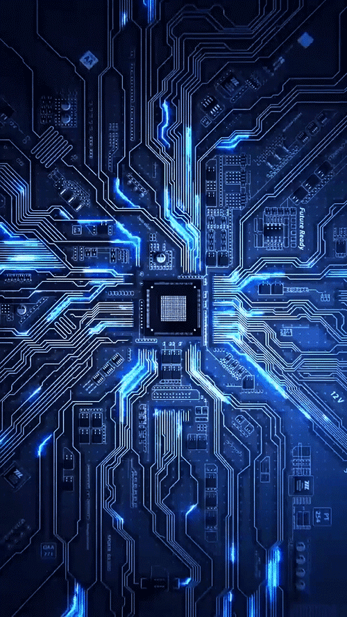
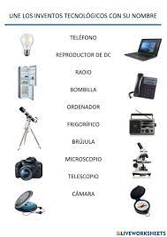
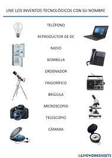
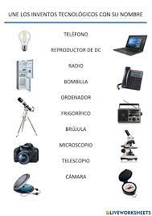

Los inventos tecnológicos


 

💡 Presiona la tecla R para ver cada una de las imágenes
🔊 Leyendo...
Los inventos tecnológicos más importantes son aquellos que han tenido un impacto profundo en la sociedad, la economía y la forma en que vivimos. Algunos de los más destacados incluyen la imprenta, la máquina de vapor, la electricidad, el teléfono, el avión, el ordenador, Internet y la inteligencia artificial.
Estos inventos no solo han transformado la forma en que nos comunicamos, trabajamos y nos desplazamos, sino que también han impulsado el progreso en diversos campos, como la medicina, la industria y la ciencia.
A continuación, se detallan algunos de estos inventos clave:
Imprenta:
La imprenta, inventada por Johannes Gutenberg en el siglo XV, permitió la producción masiva de libros y la difusión del conocimiento a un público más amplio, lo que a su vez impulsó la alfabetización y la revolución intelectual.
Máquina de vapor:
La máquina de vapor, desarrollada por James Watt en el siglo XVIII, revolucionó la industria y el transporte, dando origen a la Revolución Industrial y sentando las bases para la producción en masa y el desarrollo de nuevas tecnologías.
Electricidad:
El descubrimiento y la aplicación de la electricidad, especialmente con la invención de la bombilla por Thomas Edison, transformaron la vida cotidiana y permitieron el desarrollo de nuevas tecnologías, como la iluminación, la comunicación y la automatización.
Teléfono:
El teléfono, inventado por Alexander Graham Bell en 1876, revolucionó la comunicación, permitiendo la transmisión de voz a distancia y conectando a personas de forma instantánea.
Avión:
Los hermanos Wright lograron el primer vuelo controlado y motorizado en 1903, lo que abrió nuevas posibilidades en el transporte y la movilidad, conectando lugares distantes de manera más rápida y eficiente.
Ordenador:
El desarrollo de los ordenadores, desde las primeras máquinas hasta los ordenadores personales, ha transformado la forma en que trabajamos, estudiamos y nos entretenemos, permitiendo el procesamiento de grandes cantidades de información y la automatización de tareas complejas.
Internet:
Internet, una red global de ordenadores, ha revolucionado la comunicación, el acceso a la información y el comercio, conectando a personas de todo el mundo y facilitando la colaboración y el intercambio de conocimientos.
Inteligencia Artificial:
La inteligencia artificial, con sus avances en aprendizaje automático y redes neuronales, está transformando diversos sectores, desde la medicina hasta la industria, con aplicaciones que van desde la automatización de tareas hasta la creación de sistemas inteligentes.
Estos son solo algunos ejemplos de los inventos tecnológicos más importantes que han moldeado el mundo en el que vivimos. Cada uno de ellos ha contribuido a un progreso significativo, y la continua innovación en tecnología promete seguir transformando nuestras vidas en el futuro.
Ver video de la evolución de la tecnología